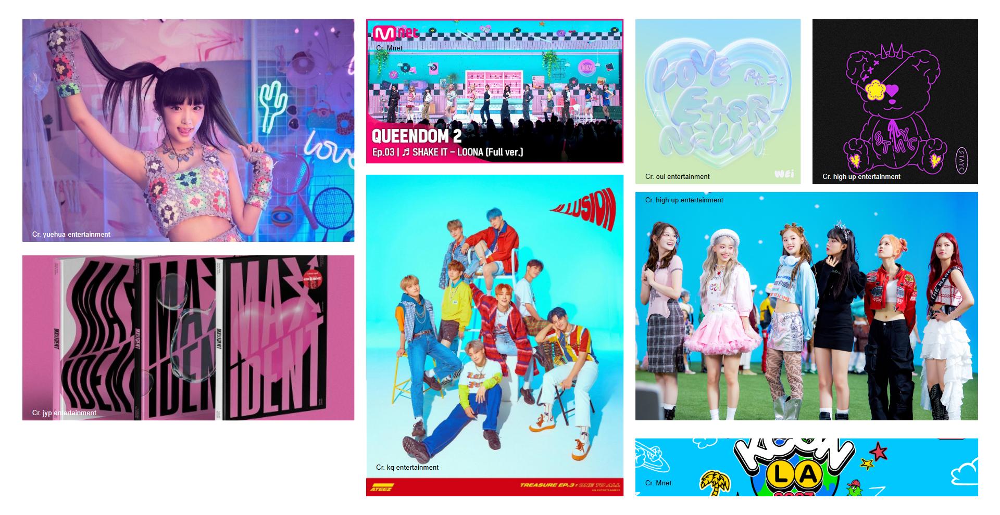
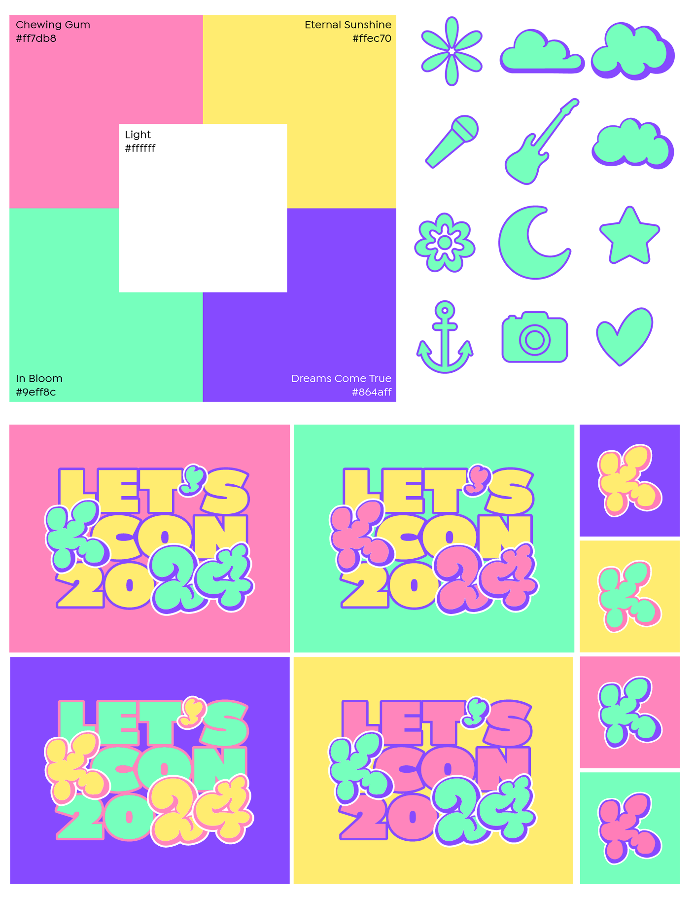

kcon 2024 reimagined
KCON LA is North America's biggest Korean pop culture event that comes back every year with a new look. With a year full of career-defining releases, generational debuts, and more visual trends than ever, what could KCON LA look like?
TIME: spring 2024
ROLE: brand identity, design system, print, digital, motion
TOOLS: adobe suite

ideating
KCON is the world’s largest fan celebration of Korean pop culture. It's made for fans to explore fun panels, meet & greets, and star-studded concerts with their favorite idols.This convention is a fun space that prioritizes fan and idol interactions. Rather than celebrities, idols should be seen as friends that are coming along for the ride. KCON LA 2024 will take place on July 27th & 28th at the LA Convention Center and Crypto.com Arena.
Since KCON alters its own brand every year and the visual trends of the industry can change overnight, it seemed like the perfect event to rebrand. To tap into the parasocial nature of the con, this rebrand builds off exisitng fun and cute concepts like YENA's Smartphone, STAYC's Teddy Bear, and ATEEZ's Illusion. This way, KCON aligns with the established visual language of the k-pop industry while still being new, fresh, and inviting.
Colors and icons were made with possible convention lineups in mind. Color names like "In Bloom" and sticker-like icons such as microphones and stars reference popular songs and idols in recent history. These logos, icons, and colors can be used interchangeably, made to fit any group's visual concept and performance. This customizability lets each piece of promotional material and merchandise to be unique yet cohesive.
promotional materials
Below are examples of group- and event-specific promotional materials, seen primarily on social channels like Instagram, Twitter, and even Spotify.

lineup reel
The most exciting part of KCON for many fans, especially those who can't attend, is the main lineup reveal. This reel is just one example of how artists can be announced and promoted via platforms like TikTok, Youtube, and Instagram.